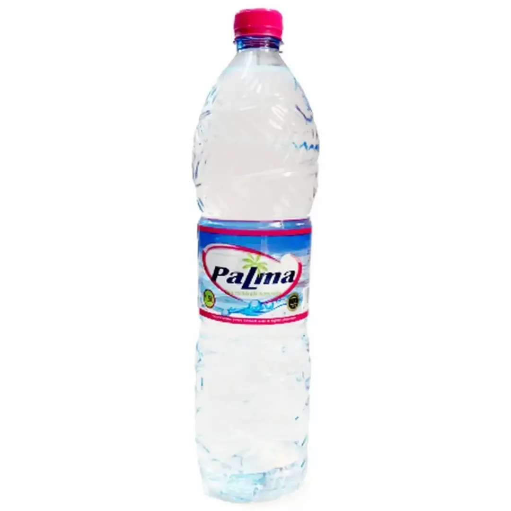

| الحجم | سعر القارورة حسب المغازة | الستيكة |
|---|---|---|
| 1,5 لتر | Carrefour 0,760 د.ت (في 6 مغازة من 39) · Géant غير متوفر | 4,560 د.ت (×6) |
أسعار مقروءة يوم 26/11/2026 من المتاجر الإلكترونية للمغازات الكبرى — تقريبية، وقد تتغيّر حسب المغازة. الستيكة = علبة من 6 قوارير (12 للقوارير 50 صل).
شارك على واتسابماء معدني طبيعي — حسب جداول الديوان الوطني للمياه المعدنية والاستشفاء بالمياه (المصدر)، بالمليغرام في اللتر ما عدا درجة الحموضة.
| البقايا الجافة (TDS) مغ/لتر | 438 |
| الكالسيوم مغ/لتر | 55.23 |
| المغنيزيوم مغ/لتر | 32.4 |
| الصوديوم مغ/لتر | 30.77 |
| البوتاسيوم مغ/لتر | 1.24 |
| البيكربونات مغ/لتر | 205.26 |
| الكبريتات مغ/لتر | 92.24 |
| الكلوريد مغ/لتر | 18.86 |
| النترات مغ/لتر | 27.53 |
| الفلوريد مغ/لتر | 0.67 |
| درجة الحموضة pH | 7.4 |
الطلب مع التوصيل إلى المنزل قريبًا في أسعار الماء في تونس: ستطلب من تجّار جملة ومخازن شريكة في جهتك، بأسعارهم الخاصة، مع التوصيل (الأسعار أعلاه هي أسعار المغازات الكبرى، للإرشاد فقط). أعلِمني عند الافتتاح.